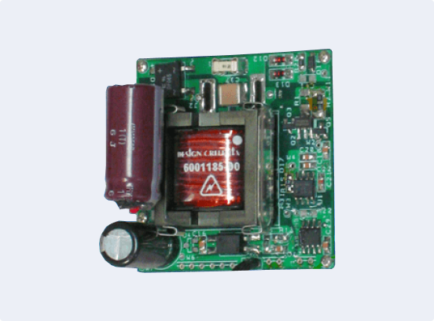

<section class="section hero-blog">
<div class="container">
    <div class="hero-desc">
        <h1 class="hero-blog-title h1" data-load-order="1">News, insights and more</h1>
        <div class="hero-blog-text" data-load-order="2">Learn more about company news, our approach to culture, and our area of work.</div>
    </div>
    <div class="hero-blog-top" data-load-order="3">
        <div class="blog-item" data-aos="fade-up">
            <div class="blog-item-media">
                <a href="#" class="blog-item-image">
                    <picture>
                        <source srcset="../../img/home/blog-page-1.png" type="image/png">
                        <source srcset="../../img/home/blog-page-1.webp" type="image/webp">
                        
                    </picture>
                </a>
            </div>
            <div class="blog-item-desc">
                <div class="blog-item-date">May 22, 2023 • 6 min read</div>
                <div class="blog-item-title h5">DC-DC Power Converters</div>
                <div class="blog-item-text">Power converters have universal applications but are commonly used in the medical field, military, and in industrial settings. Careful consideration in the manufacturing of power supplies is vital because of the significance of its capability and the importance of its reliability.</div>
                <div class="blog-item-link"><a href="#" class="link-arrow link-arrow-secondary">Learn more</a></div>
            </div>
        </div>
    </div>
</div>
</section>